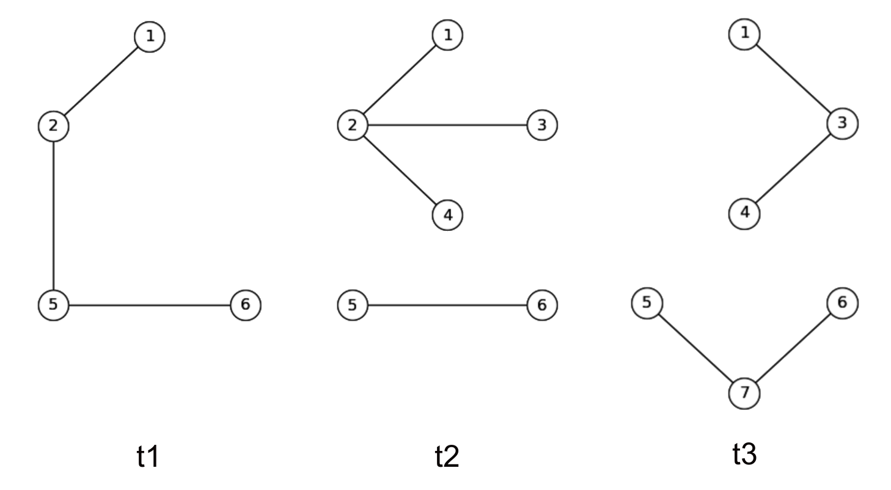

Label Propagation Algorithm
Returns the communities of the constructed graph as detected by synchronous label propagation.
Every vertex is assigned an initial label at random. Looking at the labels of its neighbours, a probability is assigned to observed labels following an increasing function then the vertex’s label is updated with the label with the highest probability. If the new label is the same as the current label, the vertex votes to halt. This process iterates until all vertice labels have converged. The algorithm is synchronous since every vertex updates its label at the same time.
Parameters
weight(String) – Edge property (Default:""). To be specified in case of weighted graph.cutoff(Double) – Outlier score threshold. (Default: 0.0). Returns the outliers with an outlier score >cutoff.maxIter(Int) – Maximum iterations for algorithm to run. (Default: 500)seed(Long) – Indicator for randomness state. (Default: -1)output_dir(String) – Directory path where the output is written to. (Default:"/tmp/LPA")
Returns
ID(Long) : Vertex IDLabel(Long) : The ID of the community this belongs to.
Notes
This implementation of LPA incorporates probabilistic elements which makes it non-deterministic; The returned communities may differ on multiple executions.
See also
Examples
In this example, the temporal network spans a time period \(t \in [1,3]\) and is built into (3) snapshots of window size 1.

Running LPA on all snapshots;
RG.rangeQuery(LPA(), start = 1,end = 3,increment = 1,windows = List(1))
This returns:
1,1,1,4042622
1,1,2,4042622
1,1,5,4042622
1,1,6,4042622
2,1,1,5545750
2,1,2,5545750
2,1,3,5545750
2,1,4,5545750
2,1,5,3223962
2,1,6,3223962
3,1,1,679956
3,1,3,679956
3,1,4,679956
3,1,5,1206247
3,1,6,1206247
3,1,7,1206247
Notice that the 1st column represents the time point where the query is run and the 2nd column is reporting the window size.
Running LPA on the aggregated graph;
RG.pointQuery(LPA(),timestamp = 3)
This returns:
3,1,8858
3,2,8858
3,3,8858
3,4,8858
3,5,6954665
3,6,6954665
3,7,6954665